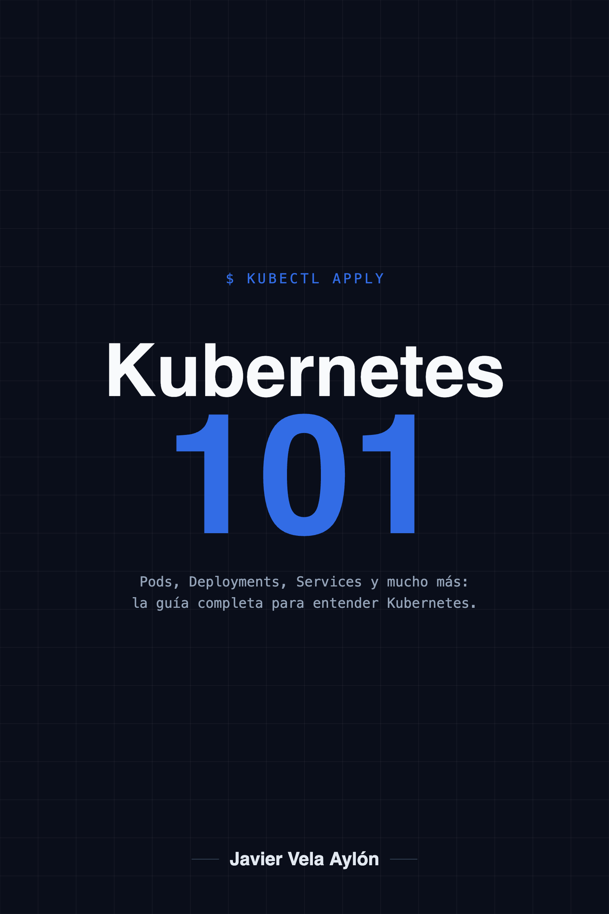

Senior Software & Platform Engineer · Autor
Javier Vela Aylón
Senior Software & Platform Engineer · +20 años
Escribo y comparto lo que aprendo sobre DevOps, Azure, AWS, CI/CD, Kubernetes, contenedores y arquitectura. Nueve veces certificado en Azure y Kubernetes, y speaker en DotNetters.
Mi primer libro · 1 de septiembre de 2026

Kubernetes 101
La guía en español para entender Kubernetes desde cero: 13 capítulos, 3 apéndices y una parte práctica con 48 laboratorios en un clúster real. 330 páginas, edición 2026 · Kubernetes 1.37.
Ver el libroLeer gratis un capítulo
Kindle 12,99 € · papel 24,99 € · en Amazon.es, .com y .com.mx
Sobre el autor
Javier Vela Aylón
Software & Platform Engineer, con más de 20 años construyendo y manteniendo plataformas. Nueve veces certificado en Azure y Kubernetes, y speaker en DotNetters.
Escribo sobre DevOps, Azure, AWS, CI/CD, Kubernetes, contenedores y arquitectura en blog.javivela.dev.